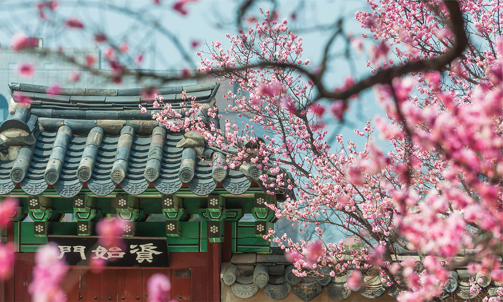
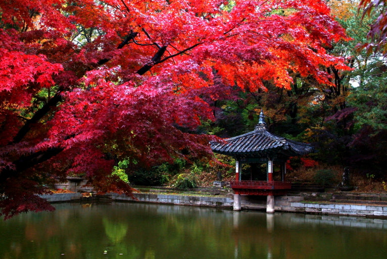
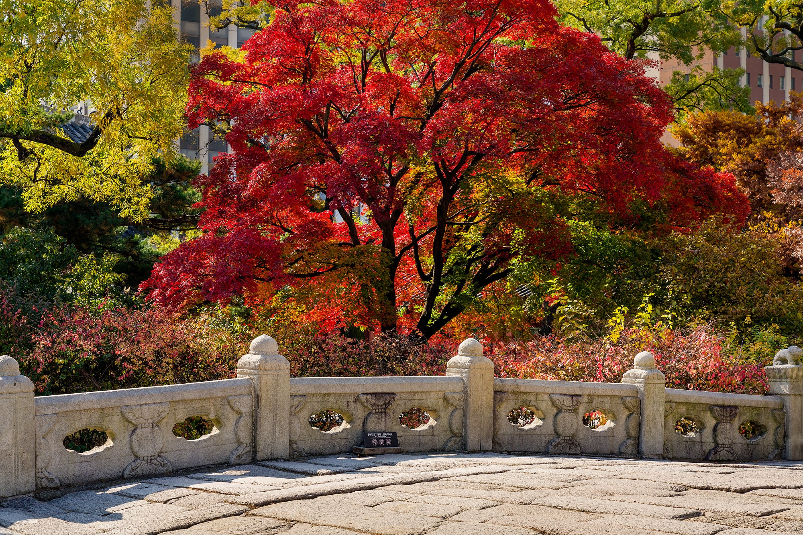

+창덕궁 방문안내
1. 이용요금
대인: 3,000원
외국인(만 19세~64세): 3,000원
만 24세 이하 청소년: 무료
만 65세 이상 어르신: 무료
장애인, 유공자: 무료
한복을 착용한 자: 무료
2. 주변볼거리
- 
- 애련지
- 그리 크지 않은 고요한 연못은
‘연꽃을 사랑한다’는 뜻의
애련지입니다.
- 
- 금천교
- 금천(禁川) 위에 세운 돌다리입니다.
현존하는 궁궐의 돌다리 중
가장 오래되었습니다.

- 부용지 일원
- 창덕궁 후원의 첫 중심 정원으로
휴식과 학문, 교육을 하던
비교적 공개된 장소입니다.
3. 오시는 길
🚇지하철
도보 5분
3호선 안국역 3번 출구
도보 10분
1·3·5호선 종로3가역 7번 출구
🚌버스
서울돈화문국악당 하차
간선 109, 151, 162, 171, 172, 272, 710
지선 7025